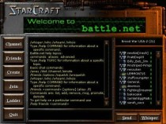

개념

배틀넷(영어: Battle.net)은 블리자드 엔터테인먼트에서 제공하는 온라인 대전 서비스이다. 배틀넷은 1996년 11월에 블리자드의 롤플레잉 게임 디아블로의 베타버전에 적용하면서 처음 시작되었다. 2009년 블리자드는 배틀넷 통합 계정 시스템을 적용하였다.
기존에는 사용자가 게임 별로 계정을 생성해 사용했지만, 배틀넷 통합 계정 시스템에서는 하나의 계정으로 블리자드의 게임, 웹사이트, 온라인 서비스를 모두 이용할 수 있다.
역사

2013년 8월 경 스팀과 비슷한, 일종의 통합 런처인 배틀넷 앱(現 블리자드 앱)이 공개되었다. 스타2, 와우, 하스스톤, 디아3, 히오스 등의 배틀넷 2.0을 지원하는 게임과 연동되며, 각 게임의 베타 참여, 자동 업데이트 기능이 탑재되어 있다. 처음엔 '서비스하는 게임도 적은 판에 굳이 통합 런처가 필요한가'며 필요성에 의문을 표하는 사람들이 많았으나, 기존 게임별 클라이언트에 비하면 압도적으로 편하기 때문에[8] 하스스톤의 베타 서비스에 힘입어 빠르게 정착했다. 블리자드가 표방한 배틀넷 2.0은 배틀넷 앱이 출시되고 나서야 제대로 시작되었다고 평가하는 사람들이 많은 편. 스타크래프트와 워크래프트 3도 지원하지 않았으나, 각각 리마스터되면서 배틀넷 2.0을 지원하게 되었다. 디아블로 1~2, 워크래프트 1~2는 배틀넷 2.0을 지원하지 않지만 위의 사례와 마찬가지로 차후 구세대 게임들도 연동할 가능성이 있다.
2015년 10월 경 하스스톤의 일본 서비스가 시작하면서 이제 일본에도 메인 홈페이지와 앱 서비스를 일본어로 접속할수 있게 되었다. 물론 하스스톤과 오버워치만 로컬라이징 된지라 다른 블리자드 PC 게임의 언어 지원 목록과 게임 홈페이지의 언어 선택에 일본어는 없다.
2016년 9월 22일, 블리자드의 공식 발표에 따르면 '블리자드'와 '배틀넷' 명칭을 혼용하다 보니 혼란을 야기하는 면이 있어 이름을 변경할 예정이었고 2017년 3월 24일 패치로 블리자드 앱이라는 이름으로 변경되었다. 배틀넷 2.0 앱은 "블리자드 앱"이라는 명칭을 사용하고, 앱 서비스를 지원하기 전에 있었던 배틀넷 2.0 서비스와 앱 서비스를 합쳐서 "블리자드 온라인 게임 서비스"라고 하게 되었다.
2017년 5월 19일, 모회사 액티비전 블리자드의 계열사 중 하나인 액티비전이 퍼블리싱하는 데스티니 2의 PC 버전을 독점 제공하게 되면서 블리자드 외의 게임도 서비스하게 되었다. 다만 서버는 번지가 관리하며, 블리자드 측은 로그인, 소셜 기능과 게임 내 구매 기능을 담당하게 된다고 한다. 고객 지원 부분 역시 게임 외적인 부분만 담당하며, 게임 플레이 내부는 번지가 담당한다. 블리자드 앱에서 액티비전 등의 다른 회사의 게임을 지원하는 것은 데스티니 2뿐으로, 그 외의 다른 게임을 지원할 계획은 없다고 밝혔다.[ 그러나 2018년 5월 17일, 콜 오브 듀티: 블랙 옵스 4가 PC판은 배틀넷 독점 서비스임이 발표되면서 입장을 번복했다.
2017년 8월 14일 다시 배틀넷이라는 명칭을 병행해 사용하기로 했다. 정식명칭은 블리자드 Battle.net이 되었다.
2017년 9월 27일 블리자드 Battle.net 앱이 모바일로 출시되었다. 이전까지는 모바일에서 배틀넷을 이용하려면 하스스톤을 실행해야 가능했으나, 모바일 앱이 생겨 가볍고 빠르게 메신저 기능을 사용할 수 있게 되었다.
2019년 11월 배틀넷 런처의 인터페이스가 리뉴얼 될 것이라는 소식이 나왔다. 지금까지도 소소한 변화는 있었지만 이번엔 아예 새로운 디자인이다. 지금까지는 모든 게임을 전부 표시할수 있었지만, 리뉴얼 런쳐는 게임을 최대 9개까지만 표시할 수 있다. 문제는 이게 선택사항이 아니라 필수라는 것이다. 게임을 한두개씩 하는 유저라면 모를까, 모든 게임을 다 즐기는 유저는 메인 화면에 9개 전부 표시할수가 없다. 또한 친구 창이 기존에는 별도였으나, 통합되었기에, 듀얼 스크린, 트리플 스크린창에 친구창 띄워두고 플레이하던 유저는 그렇게 할 수 없게 되었다. 물론 즐기는 게임이 한두개인 사람 입장에서는 자신이 즐기는 게임 탭 빼고는 모조리 숨기는게 가능하기 때문에 오히려 이득이다.
2021년 02월 리뉴얼된 배틀넷, 일명 배틀넷 2.0이 정식으로 서비스를 시작했다. 베타 시절에는 베타를 해제하면 돌아갈 수 있었으나 이제 돌아갈 수 없다. 그런데 배틀넷 샵은 디자인을 과거 배틀넷을 그대로 쓰고 있어 다소 통일감이 떨어진다. 또한 초기 베타시절에는 가장 왼쪽의 3x3탭에서 최대 9개의 목록을 고를 수 있었으나, 정식 서비스에서는 해당 탭에서 모든 게임을 볼 수 있으며 9개 제한이 풀렸다. 전체 게임 탭에서 별 모양을 누르면 즐겨찾기가 되어 상단에 아이콘이 추가된다.
2021년 4월 1일, 또 다시 로고가 바뀌었다. 새로 바뀐 로고는 블리자드 배틀넷 로고를 쓰기 전 시절에 가까운 모습이다. 배틀넷 아이콘 또한 원 모양의 파란색 배경에 배틀넷 특유의 로고가 있는 것으로 바뀌었다. 또한 샵 UI 역시 앱 UI와 통일되었다.